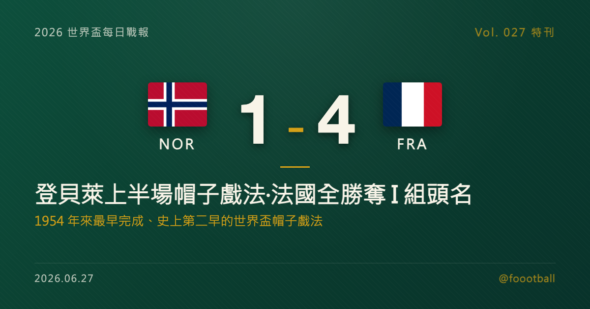

等了八年的第一球，然後是接連三球：登貝萊用一場帽子戲法寫進世界盃歷史
2026 世界盃 I 組末輪，法國在福克斯堡 4-1 大勝挪威、三戰全勝奪下小組頭名。2025 年金球獎得主登貝萊（Ousmane Dembélé）第 7、20、32 分鐘連入三球，三球全在上半場、於第 32 分鐘完成帽子戲法——這是自 1954 年奧地利的普羅布斯特以來世界盃『最早完成』的帽子戲法、史上排名第二，也是繼 1994 年薩連科以來首見的上半場世界盃帽子戲法。值得一提的是，登貝萊在 2018、2022 兩屆世界盃從未進球，本屆卻已累積 4 球。這篇特刊把這場帽子戲法、它的歷史座標、登貝萊的漫長等待，以及法國的奪冠拼圖，逐項講清楚。

2026 世界盃特刊｜Vol. 027 番外
有些球員的世界盃故事，是一路高歌；登貝萊的版本，卻是先沉默了八年，再用一個上半場全部說完。
2026 年 6 月 26 日的福克斯堡，法國在 I 組末輪 4-1 大勝挪威、以三戰全勝拿下小組頭名。比分本身在情理之中——真正讓這一夜被寫進紀錄的，是法國 7 號球員、2025 年金球獎得主登貝萊（Ousmane Dembélé）的上半場：第 7、20、32 分鐘，三度破門，一頂帽子戲法在中場哨響前就已完成。對一位踢過 2018、2022 兩屆世界盃、卻從未在世界盃進過球的球員而言，這 32 分鐘，幾乎抵得上他過去八年所有的等待。
這一夜值得慢慢拆——先拆這頂帽子戲法在世界盃史上的座標，再拆登貝萊「零進球」到「四進球」的轉折，接著看金球先生背後那支火力全開的法國，最後聊聊這場大勝對法國的奪冠之路，究竟意味著什麼。
一、那 32 分鐘：一頂寫進世界盃史冊的帽子戲法
先把紀錄擺正確，因為它很容易被誇大。
登貝萊的三顆進球分別落在第 7、20、32 分鐘，全部在上半場。以「完成時間」來算，他在第 32 分鐘湊齊帽子戲法——這是自 1954 年奧地利球員普羅布斯特（Erich Probst，第 24 分鐘完成）以來，世界盃史上「最早完成」的帽子戲法，排名史上第二。換句話說，這不是「世界盃史上最快的帽子戲法」（普羅布斯特仍比他更早），而是七十二年來最早完成的一頂，也是世界盃史上第二早完成的帽子戲法。這個分寸值得守住：登貝萊的稀有，在於「早」，而不在於「三球之間有多快」——畢竟從第一球到第三球橫跨了 25 分鐘，並不算電光石火。
但若換一個角度看，這頂帽子戲法的稀有度只增不減。它是繼 1994 年俄羅斯的薩連科（Oleg Salenko）以來，世界盃首見的上半場帽子戲法——三十二年來，沒有任何球員能在世界盃的單一上半場連入三球。而把鏡頭拉回法國隊史，登貝萊更是法國隊史第三位在世界盃完成帽子戲法的球員，前兩位是 1958 年的傳奇射手方丹（Just Fontaine），以及 2022 年決賽上演帽子戲法的姆巴佩（Kylian Mbappé）。在方丹與姆巴佩之間，是一段以「世界盃帽子戲法」為單位、極為稀疏的名單——綜觀整部世界盃史，能完成帽子戲法的場次屈指可數，而能在上半場、又在開賽半小時上下就湊齊的，更是鳳毛麟角。登貝萊把自己的名字，添了上去；而且是擺在「最早完成」名單裡、僅次於一個七十二年前紀錄的位置。
二、零，然後是四：一位金球先生的世界盃等待
要理解這頂帽子戲法對登貝萊本人的份量，得先知道一個容易被忽略的事實：在 2026 年之前，登貝萊從未在世界盃進過球。
他並不是無名之輩。2018 年，他是法國奪冠陣容的一員；2022 年，他再度入選、隨隊一路打進決賽。兩屆世界盃、一座冠軍、一個亞軍，他都在場上——卻始終沒能在這個最大的舞台上親自破門。對一位以爆發力與盤帶聞名、生涯被寄予厚望的邊鋒來說，這是一塊缺了很久的拼圖。一名世界盃冠軍成員，卻在兩屆賽事裡顆粒無收，這樣的反差，本身就帶著某種命運的懸念：天賦從不是問題，問題是那個能把天賦兌現在最大舞台上的瞬間，遲遲沒有到來。
而 2025 年，是登貝萊職業生涯的轉捩點。效力巴黎聖日耳曼的他，隨隊首度捧起歐冠獎盃，並在年底正式加冕——2025 年的金球獎得主，是登貝萊，他成為繼科帕、普拉提尼、帕潘、席丹、本澤馬之後，史上第六位獲得金球獎的法國球員。從一名長年被認為「天賦未能完全兌現」的球員，到站上個人榮譽的頂點，登貝萊用一個賽季完成了外界等了很多年的證明。
帶著金球先生的身份重返世界盃，28 歲的登貝萊像是被打通了任督二脈。本屆小組賽，他先在對伊拉克一戰攻入個人本屆、也是生涯第一顆世界盃進球，打破了長達八年的進球荒；再到末輪面對挪威，一口氣補上三球。三場小組賽下來，登貝萊本屆世界盃已累積 4 顆進球（伊拉克 1＋挪威 3）——而這 4 球，正好就是他職業生涯至今全部的世界盃進球。從八年顆粒無收，到單屆四球、外加一頂史詩級帽子戲法，這個轉折本身，就是這屆世界盃最動人的個人敘事之一。
三、金球先生身後，是一支火力全開的法國
帽子戲法是登貝萊的個人秀，但能讓這場秀成立的，是這支法國的整體強度。
最值得一提的助攻者，是法國隊長姆巴佩。這位已達成百場國家隊出賽、並超越吉魯成為法國史上頭號射手的當家球星，這場比賽雖未進球，卻送出兩記助攻——登貝萊的第一、第二球，都出自姆巴佩之手。當外界習慣性地把目光放在姆巴佩的進球數時，他在這一夜選擇用兩記傳球，成全隊友的歷史時刻；而他本人本屆小組賽同樣已累積 4 球，與登貝萊並列法國隊內最佳。一支球隊最可怕的樣子，往往不是只有一門重砲，而是當其中一人甘願為另一人拉開空間、遞上子彈。
這也是這支法國最讓對手頭疼的地方：當隊內進球榜由登貝萊與姆巴佩兩人並列領跑、各入 4 球時，對手的防守便陷入兩難——重點封鎖其中一人，另一人就有了空間。小組賽三戰攻入 10 球，火力來自不只一個點，這種「多核」的攻擊結構，比單一巨星的個人秀更難防、也更耐打。
法國的攻擊厚度還不止於此。終場前，年輕新星杜埃（Désiré Doué）以一記頭球攻入全場第四球，為大勝錦上添花。三戰全勝、攻入 10 球、淨勝球 +8 為全大會之最——這支由名帥德尚（Didier Deschamps）執教的法國，用 I 組三場比賽展示了令人生畏的進攻火力。值得一提的是，德尚已公開表示 2026 世界盃將是他執教法國的最後一屆大賽；對這位帶隊拿過 2018 冠軍、2022 亞軍的主帥而言，這趟旅程，也承載著為自己的法國時代畫上句點的意味。
還有一個當日的插曲值得補上一筆：這場比賽德尚因母親喪事暫離球隊，臨場由助理教練 Guy Stéphan 指揮；但這並不改變這支法國隊仍是在德尚長期架構下成形的事實。
四、不是生死戰，卻是宣示戰：對法國奪冠之路的意義
必須誠實指出一個背景：這場 4-1，不是生死戰，而是一場「雙方已出線、但仍牽動小組頭名」的末輪戰。
法國與挪威在末輪開打前，都已確定晉級淘汰賽。法國要爭的是小組頭名，挪威則早早做出取捨——主帥索爾巴肯（Ståle Solbakken）大幅輪換、雪藏了當家射手哈蘭德（Erling Haaland），為淘汰賽保留體能。換言之，登貝萊的帽子戲法，是在對手刻意輪換的背景下取得的，這一點在評估其「含金量」時必須誠實計入。挪威最終仍以小組第二晉級——這是這支由隊長厄德高（Martin Ødegaard）領銜的球隊，自 1998 年以來首度重返世界盃，本身已是一則勵志故事。
但即便扣掉「對手輪換」這層折扣，這場大勝對法國的意義依然清楚：它讓法國以最理想的方式進入淘汰賽——全勝、火力旺、王牌手感火燙，而且頭號球星之間還能彼此成全。在擴軍到 48 隊、淘汰賽改打 32 強的新賽制下，奪冠之路比往年要多踢一輪，每一分體能與每一次默契的積累都更為珍貴。以 I 組頭名進入 32 強，法國淘汰賽首輪將對上瑞典；挪威則以小組第二身份面對象牙海岸。頭名帶來的是較明確的路線與心理優勢，但真正的價值，仍要靠淘汰賽每一場硬仗去兌現。對法國而言，真正的考驗會從淘汰賽遭遇強敵時才開始——登貝萊能否在對方重點盯防下依舊保持這樣的效率？這支攻強的法國，後防能否扛得住一支同級數球隊的衝擊？金球先生的手感能不能延續到一場勢均力敵的淘汰賽裡？這些問題，要到硬仗才有答案。
說到底，這一夜屬於登貝萊。一個踢了兩屆世界盃卻從未進球的人，在 28 歲、頂著金球先生光環回到這個舞台，用一個上半場連入三球，把自己的名字刻進了世界盃帽子戲法那份稀疏而閃亮的名單。法國能走多遠還是未知數，但至少在這一夜，那塊缺了八年的拼圖，終於被補上了——而且是以最華麗的方式。
常見問題
Q：登貝萊這頂帽子戲法是「世界盃史上最快」嗎？ A：不是。準確的說法是「史上最早完成的第二頂」。登貝萊在第 7、20、32 分鐘進球，於第 32 分鐘完成帽子戲法，是自 1954 年奧地利球員普羅布斯特（第 24 分鐘完成）以來世界盃最早完成的一頂、史上排名第二。它同時是繼 1994 年薩連科以來首見的「上半場帽子戲法」，並讓登貝萊成為法國隊史第三位在世界盃完成帽子戲法的球員（前兩位為方丹、姆巴佩）。
Q：登貝萊本屆世界盃進了幾球？他過去在世界盃表現如何？ A：登貝萊本屆已累積 4 球（對伊拉克 1 球、對挪威帽子戲法 3 球；對塞內加爾未進球）。特別的是，他在 2018、2022 兩屆世界盃從未進球——儘管他是 2018 法國奪冠陣容的一員。換句話說，這 4 球正好是他職業生涯至今全部的世界盃進球，全部在 2026 年攻入。
Q：法國這場是全主力盡出嗎？挪威為什麼輸這麼多？ A：這是一場雙方賽前都已晉級、但仍牽動小組頭名的末輪戰。法國為爭小組頭名派出主力；挪威則大幅輪換、雪藏哈蘭德以保留體能備戰淘汰賽。最終法國 4-1 取勝、三戰全勝奪 I 組頭名，挪威仍以小組第二晉級。評估登貝萊帽子戲法的份量時，對手刻意輪換這一背景應一併考量。
Q：登貝萊是現任金球獎得主嗎？ A：是。登貝萊獲得 2025 年金球獎，是繼科帕、普拉提尼、帕潘、席丹、本澤馬之後，史上第六位贏得金球獎的法國球員。他在 2024-25 賽季隨巴黎聖日耳曼首度捧起歐冠獎盃，年底加冕金球先生。
Tags: 世界盃, 2026世界盃, 登貝萊, 法國, 帽子戲法, 姆巴佩